Popular Zoo Animal Information
Brown Bears
Click here for more information!
- Ollie
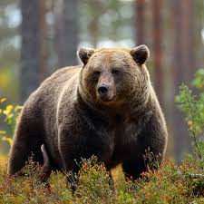
Ollie, or "Ollie Bear" to his biggest fans, is a 15 year old brown bear. He likes to spend his days catching fish and rubbing on his favorite scratching post. His favorite food and toys are apples.
- Mona
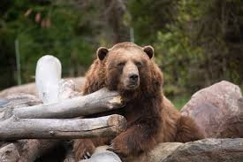
Big Mona is a 10 year old brown bear named after the catfish from Scooby-Doo on Zombie Island. She is a very solitary bear but loves to nap with Ollie close by. She often waves to onlookers when she bothers to pay attention to them.
Giraffes
Click here for more information!
- Frankie
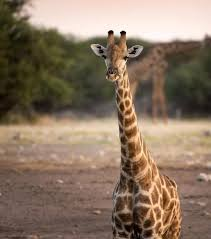
Frankie is Coconut's big sister. She is 4 years old and very devoted to her younger sibling. Frankie loves to share her leaves with Coconut, but not if they are Acacia.
- Coconut
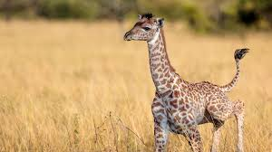
Coconut is the newest addition giraffe in the zoo. She is 6 months old and stands at about 8 feet tall. Coconut loves to chase birds from the safari plains while her spots get lighter with each passing day.
African Lions
Click here for more information!
- Mella
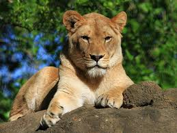
Mella is the lead lioness in Karl's pride. She is strong, loyal, and the best mother to all of the cubs. She spends her days napping in the shade and playing "pounce" with the younger lions. Every now and then, she needs to straighten out Karl's bad mood.
- Karl
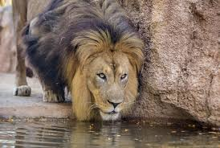
Karl is the leader of the pride in the safari plains. He's leadership skills are commendable but his mood could use some work. Karl is often grouchy and can snap at the younger lions if Mella doesn't step in to calm him down.
Vervet Mokeys
Click here for more information!
- Cookie
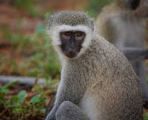
Cookie is a 9 year old vervet monkey. He is quite the trickster and a bottomless pit. Cookie often convinces the zookeepers that he has not been given his daily treats after every shift change. Sometimes, this ends in his favor.
- Earl
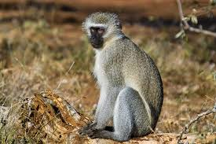
Earl is a VERY good vervet monkey and would like guests of the zoo to stop singing that offensive country song at him every time he is outside.
- Banana Pudding

Banana Pudding is the newest vervet monkey in the zoo. He is 4 months old and not really sure what life is all about yet. His favortie pasttime is picking insects off of his mother and running around like his tail is on fire.
American Alligators
Click here for more information!
- Wren
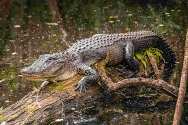
Wren's backstory here
- Aspen
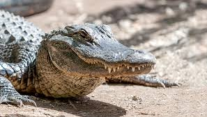
Aspen's backstory here
- Mika
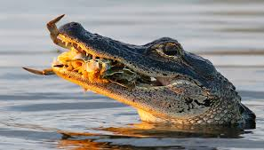
Mika's backstory here